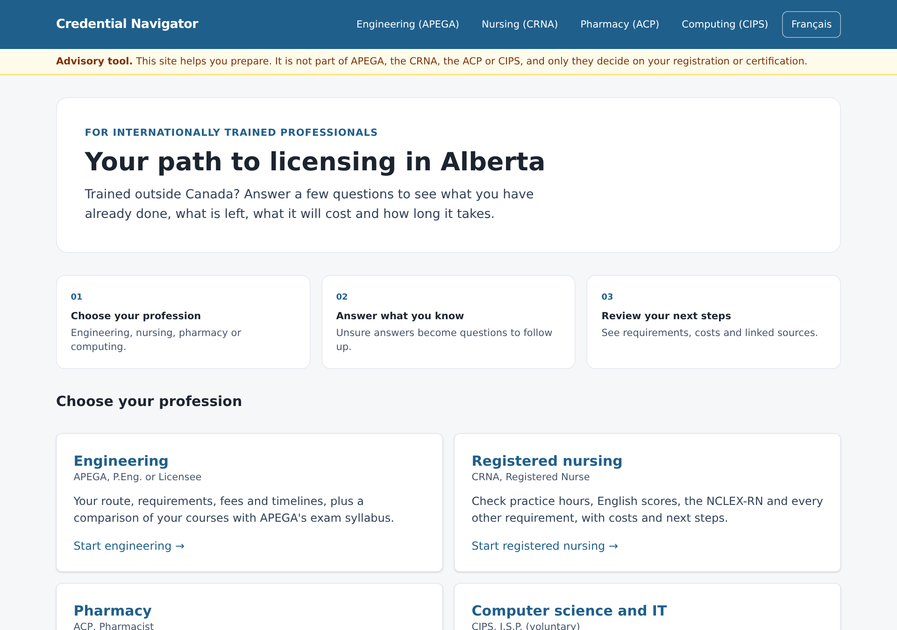
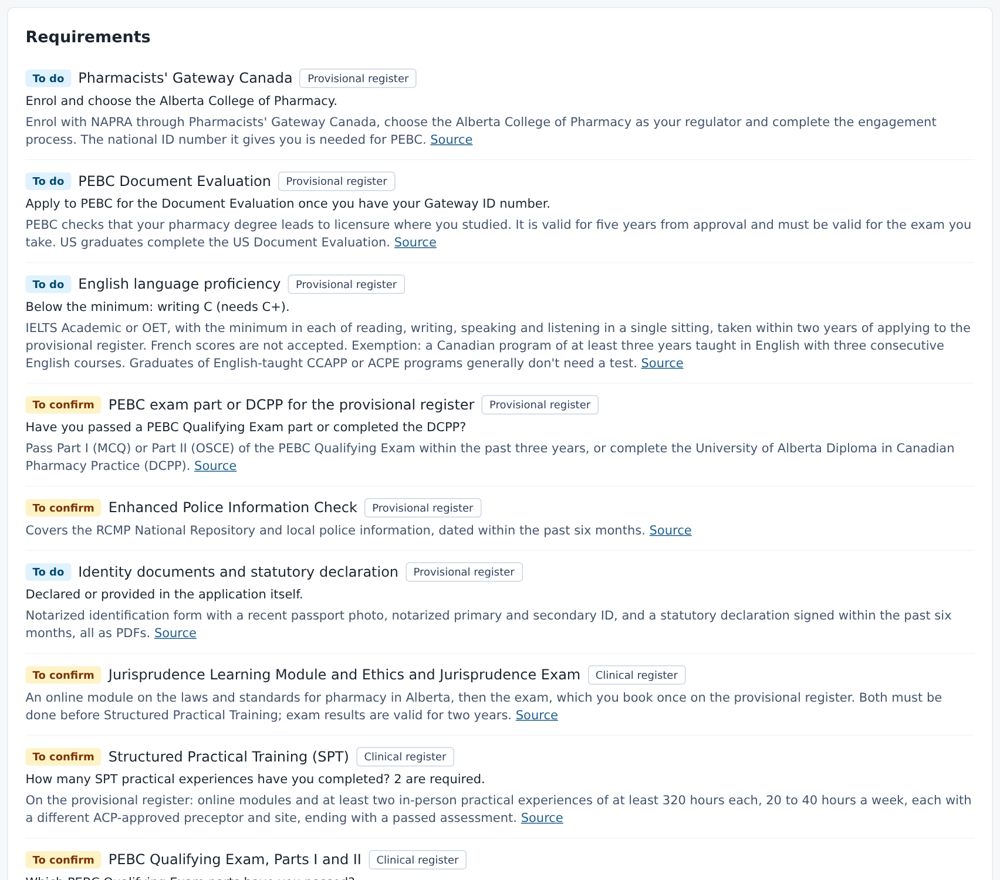
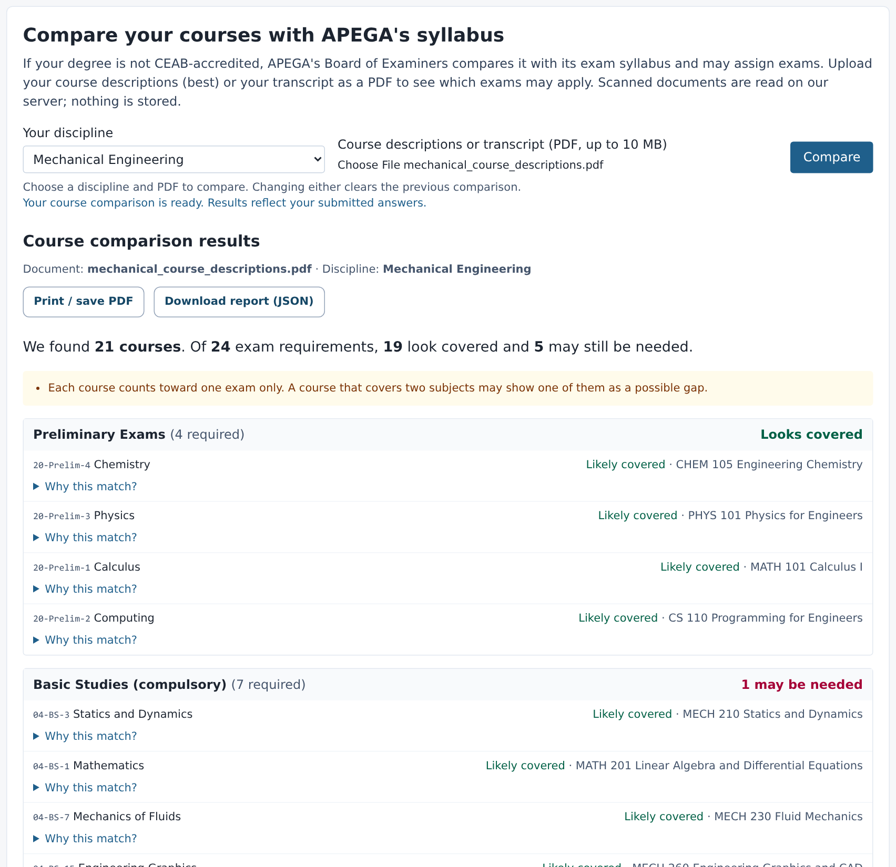
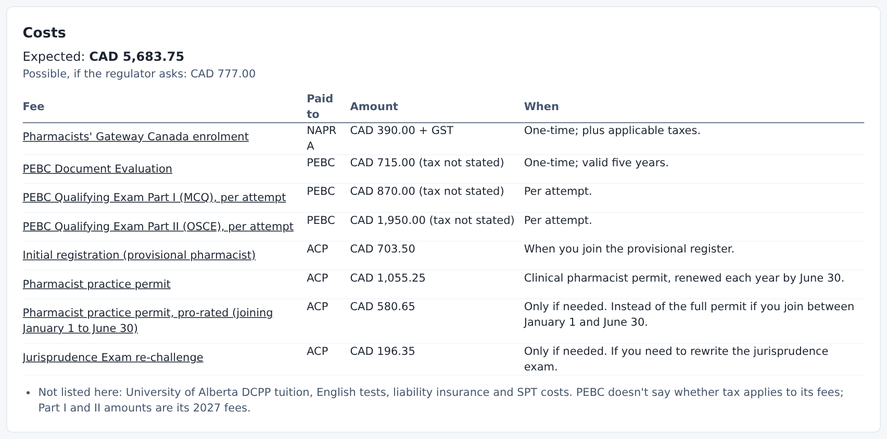
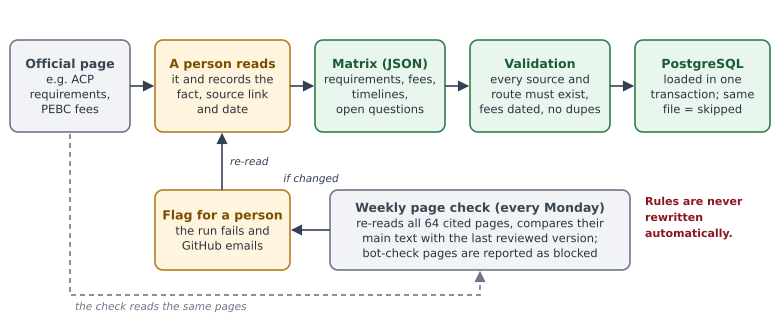

A personal, sourced licensing plan for internationally trained professionals in Alberta, in about ten minutes.
The problem. Newcomers with professional degrees face a maze: regulator rules, national exam boards, credential assessments, English tests, each on a different website with its own fees and order of steps. Counsellors spend hours piecing it together for each client, and clients often pay for the wrong step first.
What it does
Asks a short set of questions; "Not sure" is always allowed and becomes a follow-up item, never a guess.
Shows the client's route, what's done, what's left, the expected and possible costs, and the regulator's timelines.
For engineers: compares uploaded course descriptions or transcripts (including scans) with APEGA's exam syllabus to show likely gaps.
Checks English test results band by band against the published minimums.
Gives the client a copy to print or save as PDF. Interface in English and French; works on a phone.
Professions covered
Profession
Organization
Engineering
APEGA (P.Eng., Licensee, Member-in-Training)
Registered nursing
CRNA (with NNAS and NCLEX-RN)
Pharmacy
Alberta College of Pharmacy (with PEBC and NAPRA)
Computer science and IT
CIPS I.S.P. (voluntary); points software engineers to APEGA
More professions can be added from the regulators' public requirements.
Built to be trusted
Every fact is sourced: each requirement and fee links to the official page and the date it was checked.
Watched weekly: all 64 cited pages are compared every Monday; a person reviews any change. Rules never change automatically.
Rules come from data, not AI: no AI model decides requirements; the course comparison is a transparent text match that shows its reasons.
Built to protect clients
No accounts, no names, no ID numbers.
Answers and documents are not stored; no cookies, analytics or outside AI services.
Saving a draft is optional and stays in that browser only.
A plain-language privacy page in English and French.
Advisory only. Credential Navigator helps clients prepare. It is not part of, or endorsed by, any regulator, and only the regulator decides on registration.
Pilot proposal
What
Details
Length and size
Six weeks, three to five counsellors, used in real appointments where it fits
Cost to the agency
None
What we ask
Report anything wrong, unclear or missing; a short check-in every two weeks
What we measure
Time per client, errors caught, and whether clients understand their next step
What you get
Early access, a say in which professions come next, and a summary of the results
Credential Navigator · at a glance
What clients see, and how the information is kept accurate.
What your clients see

Choose a profession; the advisory note is on every page.

A pharmacist's plan: each step labelled, English checked band by band, every item sourced.

Engineers: courses compared with APEGA's exam syllabus, with the reasons shown.

Expected and possible costs, each fee linked to the official page.
How the information stays accurate

A person records each fact from the official page, with its link and date. Every Monday all 64 cited pages are re-read; a change is flagged for review. Nothing changes automatically.